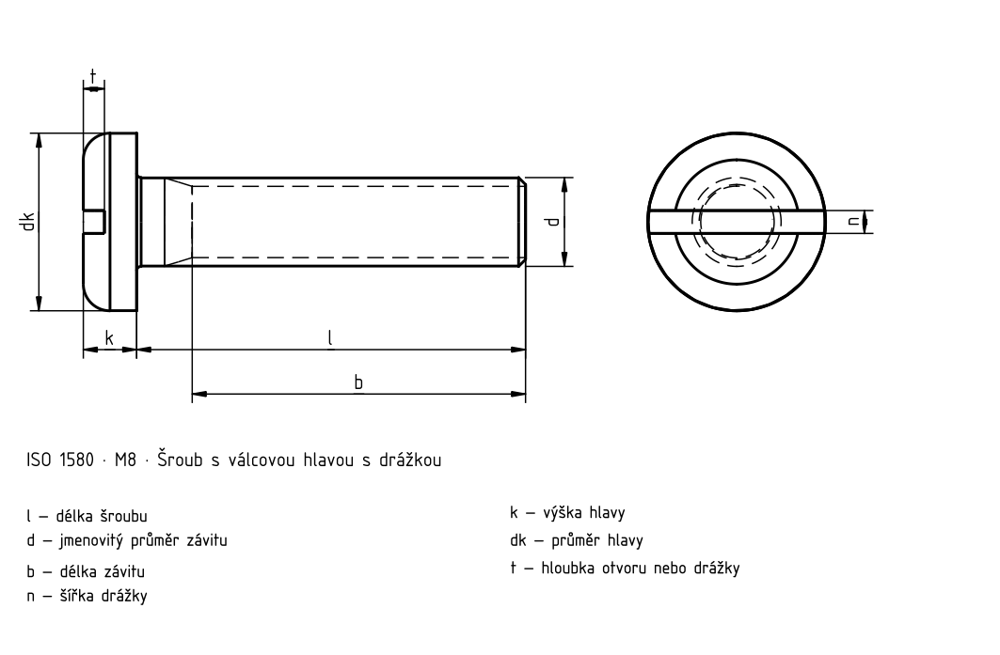

Šrouby s velkou válcovou hlavou
Historický podklad; číselné hodnoty a výjimky nejsou úplně ověřené proti platné normě.

Šrouby s velkou válcovou hlavou
| d | Rozteč P | a _max. | b _min. | d _k max.1) | d _k min.1) | d _a max.1) | k _max. | k _min. | n | n _max. | n _min. | r _min. | r _f | t _min. | w _min. | x _max. |
|---|---|---|---|---|---|---|---|---|---|---|---|---|---|---|---|---|
| M1,6 | 0,35 | 0,7 | 25 | 3,2 | 2,9 | 2 | 1,0 | 0,86 | 0,4 | 0,6 | 0,46 | 0,1 | 0,5 | 0,35 | 0,3 | 0,9 |
| M2 | 0,4 | 0,8 | 25 | 4,0 | 3,7 | 2,6 | 1,3 | 1,16 | 0,5 | 0,7 | 0,56 | 0,1 | 0,6 | 0,5 | 0,4 | 1 |
| M2,5 | 0,45 | 0,9 | 25 | 5,0 | 4,7 | 3,1 | 1,5 | 1,36 | 0,6 | 0,8 | 0,66 | 0,1 | 0,8 | 0,6 | 0,5 | 1,1 |
| M3 | 0,5 | 1 | 25 | 5,6 | 5,3 | 3,6 | 1,8 | 1,66 | 0,8 | 1 | 0,86 | 0,1 | 0,9 | 0,7 | 0,7 | 1,25 |
| (M3,5) | 0,6 | 1,2 | 38 | 7,0 | 6,64 | 4,1 | 2,1 | 1,96 | 1 | 1,2 | 1,06 | 0,1 | 1 | 0,8 | 0,8 | 1,5 |
| M4 | 0,7 | 1,4 | 38 | 8,0 | 7,64 | 4,7 | 2,4 | 2,26 | 1,2 | 1,51 | 1,26 | 0,2 | 1,2 | 1 | 1 | 1,75 |
| M5 | 0,8 | 1,6 | 38 | 9,5 | 9,14 | 5,7 | 3,0 | 2,86 | 1,2 | 1,51 | 1,26 | 0,2 | 1,5 | 1,2 | 1,2 | 2 |
| M6 | 1 | 2 | 38 | 12,0 | 11,57 | 6,8 | 3,6 | 3,3 | 1,6 | 1,91 | 1,66 | 0,25 | 1,8 | 1,4 | 1,4 | 2,5 |
| M8 | 1,25 | 2,5 | 38 | 16,0 | 15,57 | 9,2 | 4,8 | 4,5 | 2 | 2,31 | 2,06 | 0,4 | 2,4 | 1,9 | 1,9 | 3,2 |
| M10 | 1,5 | 3 | 38 | 20,0 | 19,48 | 11,2 | 6,0 | 5,7 | 2,5 | 2,81 | 2,56 | 0,4 | 3 | 2,4 | 2,4 | 3,8 |
Šrouby s velkou válcovou hlavou · Orientační hmotnosti
| l | Δl | M1,6 [kg/1000] | M2 [kg/1000] | M2,5 [kg/1000] | M3 [kg/1000] | (M3,5) [kg/1000] | M4 [kg/1000] | M5 [kg/1000] | M6 [kg/1000] | M8 [kg/1000] | M10 [kg/1000] |
|---|---|---|---|---|---|---|---|---|---|---|---|
| 2 | 0,2 | 0,075 [F] | — | — | — | — | — | — | — | — | — |
| 2,5 | 0,2 | 0,081 [F] | 0,152 [F] | — | — | — | — | — | — | — | — |
| 3 | 0,2 | 0,087 [F] | 0,161 [F] | 0,281 [F] | — | — | — | — | — | — | — |
| 4 | 0,24 | 0,099 [F] | 0,180 [F] | 0,311 [F] | 0,463 [F] | — | — | — | — | — | — |
| 5 | 0,24 | 0,110 [F] | 0,198 [F] | 0,341 [F] | 0,507 [F] | 0,825 [F] | 1,16 [F] | — | — | — | — |
| 6 | 0,24 | 0,122 [F] | 0,217 [F] | 0,371 [F] | 0,551 [F] | 0,885 [F] | 1,24 [F] | 2,12 [F] | — | — | — |
| 8 | 0,29 | 0,145 [F] | 0,254 [F] | 0,431 [F] | 0,639 [F] | 1,00 [F] | 1,39 [F] | 2,37 [F] | 4,02 [F] | — | — |
| 10 | 0,29 | 0,168 [F] | 0,292 [F] | 0,491 [F] | 0,727 [F] | 1,12 [F] | 1,55 [F] | 2,61 [F] | 3,37 [F] | 9,38 [F] | — |
| 12 | 0,35 | 0,192 [F] | 0,329 [F] | 0,551 [F] | 0,816 [F] | 1,24 [F] | 1,70 [F] | 2,86 [F] | 4,72 [F] | 10,0 [F] | 18,2 [F] |
| 14 | 0,35 | 0,215 [F] | 0,366 [F] | 0,611 [F] | 0,904 [F] | 1,36 [F] | 1,86 [F] | 3,11 [F] | 5,10 [F] | 10,06 [F] | 19,2 [F] |
| 16 | 0,35 | 0,238 [F] | 0,404 [F] | 0,671 [F] | 0,992 [F] | 1,48 [F] | 2,01 [F] | 3,36 [F] | 5,45 [F] | 11,2 [F] | 20,2 [F] |
| 20 | 0,42 | — | 0,478 [F] | 0,792 [F] | 1,170 [F] | 1,72 [F] | 2,32 [F] | 3,65 [F] | 6,14 [F] | 12,6 [F] | 22,2 [F] |
| 25 | 0,42 | — | — | 0,942 [F] | 1,390 [F] | 2,02 [F] | 2,71 [F] | 4,47 [F] | 7,01 [F] | 14,1 [F] | 24,7 [F] |
| 30 | 0,42 | — | — | — | 1,610 [F] | 2,32 [F] | 3,10 [F] | 5,09 [F] | 7,90 [F] | 15,7 [F] | 27,1 [F] |
| 35 | 0,5 | — | — | — | — | 2,62 [F] | 3,48 [F] | 5,71 [F] | 8,78 [F] | 17,3 [F] | 29,7 [F] |
| 40 | 0,5 | — | — | — | — | — | 3,87 [F] | 6,32 [F] | 9,66 [F] | 18,9 [F] | 32,2 [F] |
| 45 | 0,5 | — | — | — | — | — | — | 6,94 | 10,5 | 20,5 | 34,7 |
| 50 | 0,5 | — | — | — | — | — | — | 7,56 | 11,4 | 22,1 | 37,2 |
| 55 | 0,95 | — | — | — | — | — | — | — | 12,3 | 23,7 | 39,7 |
| 60 | 0,95 | — | — | — | — | — | — | — | 13,2 | 25,3 | 42,2 |
| 65 | 0,95 | — | — | — | — | — | — | — | — | 26,9 | 44,7 |
| 70 | 0,95 | — | — | — | — | — | — | — | — | 28,5 | 47,2 |
| 75 | 0,95 | — | — | — | — | — | — | — | — | 30,1 | 49,7 |
| 80 | 0,95 | — | — | — | — | — | — | — | — | 31,7 | 52,2 |
Šrouby s velkou válcovou hlavou · Normový kontext
| Položka | Hodnota |
|---|---|
| Normový kontext | ISO 1580:2011 |
| Výrobní třída | A |
| Pevnostní třída | Úplné znění normy je potřeba k ověření rozměrů, tolerancí a všech podmínek. |
Šrouby s velkou válcovou hlavou
| d | Rozteč P | a _max. | b _min. | d _k max.1) | d _k min.1) | d _a max.1) |
|---|---|---|---|---|---|---|
| M1,6 | 0,35 | 0,7 | 25 | 3,2 | 2,9 | 2 |
| M2 | 0,4 | 0,8 | 25 | 4,0 | 3,7 | 2,6 |
| M2,5 | 0,45 | 0,9 | 25 | 5,0 | 4,7 | 3,1 |
| M3 | 0,5 | 1 | 25 | 5,6 | 5,3 | 3,6 |
| (M3,5) | 0,6 | 1,2 | 38 | 7,0 | 6,64 | 4,1 |
| M4 | 0,7 | 1,4 | 38 | 8,0 | 7,64 | 4,7 |
| M5 | 0,8 | 1,6 | 38 | 9,5 | 9,14 | 5,7 |
| M6 | 1 | 2 | 38 | 12,0 | 11,57 | 6,8 |
| M8 | 1,25 | 2,5 | 38 | 16,0 | 15,57 | 9,2 |
| M10 | 1,5 | 3 | 38 | 20,0 | 19,48 | 11,2 |
Šrouby s velkou válcovou hlavou
| d | k _max. | k _min. | n | n _max. | n _min. | r _min. |
|---|---|---|---|---|---|---|
| M1,6 | 1,0 | 0,86 | 0,4 | 0,6 | 0,46 | 0,1 |
| M2 | 1,3 | 1,16 | 0,5 | 0,7 | 0,56 | 0,1 |
| M2,5 | 1,5 | 1,36 | 0,6 | 0,8 | 0,66 | 0,1 |
| M3 | 1,8 | 1,66 | 0,8 | 1 | 0,86 | 0,1 |
| (M3,5) | 2,1 | 1,96 | 1 | 1,2 | 1,06 | 0,1 |
| M4 | 2,4 | 2,26 | 1,2 | 1,51 | 1,26 | 0,2 |
| M5 | 3,0 | 2,86 | 1,2 | 1,51 | 1,26 | 0,2 |
| M6 | 3,6 | 3,3 | 1,6 | 1,91 | 1,66 | 0,25 |
| M8 | 4,8 | 4,5 | 2 | 2,31 | 2,06 | 0,4 |
| M10 | 6,0 | 5,7 | 2,5 | 2,81 | 2,56 | 0,4 |
Šrouby s velkou válcovou hlavou
| d | r _f | t _min. | w _min. | x _max. |
|---|---|---|---|---|
| M1,6 | 0,5 | 0,35 | 0,3 | 0,9 |
| M2 | 0,6 | 0,5 | 0,4 | 1 |
| M2,5 | 0,8 | 0,6 | 0,5 | 1,1 |
| M3 | 0,9 | 0,7 | 0,7 | 1,25 |
| (M3,5) | 1 | 0,8 | 0,8 | 1,5 |
| M4 | 1,2 | 1 | 1 | 1,75 |
| M5 | 1,5 | 1,2 | 1,2 | 2 |
| M6 | 1,8 | 1,4 | 1,4 | 2,5 |
| M8 | 2,4 | 1,9 | 1,9 | 3,2 |
| M10 | 3 | 2,4 | 2,4 | 3,8 |
Šrouby s velkou válcovou hlavou · Orientační hmotnosti
| l | Δl | M1,6 [kg/1000] | M2 [kg/1000] | M2,5 [kg/1000] | M3 [kg/1000] | (M3,5) [kg/1000] |
|---|---|---|---|---|---|---|
| 2 | 0,2 | 0,075 [F] | — | — | — | — |
| 2,5 | 0,2 | 0,081 [F] | 0,152 [F] | — | — | — |
| 3 | 0,2 | 0,087 [F] | 0,161 [F] | 0,281 [F] | — | — |
| 4 | 0,24 | 0,099 [F] | 0,180 [F] | 0,311 [F] | 0,463 [F] | — |
| 5 | 0,24 | 0,110 [F] | 0,198 [F] | 0,341 [F] | 0,507 [F] | 0,825 [F] |
| 6 | 0,24 | 0,122 [F] | 0,217 [F] | 0,371 [F] | 0,551 [F] | 0,885 [F] |
| 8 | 0,29 | 0,145 [F] | 0,254 [F] | 0,431 [F] | 0,639 [F] | 1,00 [F] |
| 10 | 0,29 | 0,168 [F] | 0,292 [F] | 0,491 [F] | 0,727 [F] | 1,12 [F] |
| 12 | 0,35 | 0,192 [F] | 0,329 [F] | 0,551 [F] | 0,816 [F] | 1,24 [F] |
| 14 | 0,35 | 0,215 [F] | 0,366 [F] | 0,611 [F] | 0,904 [F] | 1,36 [F] |
| 16 | 0,35 | 0,238 [F] | 0,404 [F] | 0,671 [F] | 0,992 [F] | 1,48 [F] |
| 20 | 0,42 | — | 0,478 [F] | 0,792 [F] | 1,170 [F] | 1,72 [F] |
| 25 | 0,42 | — | — | 0,942 [F] | 1,390 [F] | 2,02 [F] |
| 30 | 0,42 | — | — | — | 1,610 [F] | 2,32 [F] |
| 35 | 0,5 | — | — | — | — | 2,62 [F] |
| 40 | 0,5 | — | — | — | — | — |
| 45 | 0,5 | — | — | — | — | — |
| 50 | 0,5 | — | — | — | — | — |
| 55 | 0,95 | — | — | — | — | — |
| 60 | 0,95 | — | — | — | — | — |
| 65 | 0,95 | — | — | — | — | — |
| 70 | 0,95 | — | — | — | — | — |
| 75 | 0,95 | — | — | — | — | — |
| 80 | 0,95 | — | — | — | — | — |
Šrouby s velkou válcovou hlavou · Orientační hmotnosti
| l | M4 [kg/1000] | M5 [kg/1000] | M6 [kg/1000] | M8 [kg/1000] | M10 [kg/1000] |
|---|---|---|---|---|---|
| 2 | — | — | — | — | — |
| 2,5 | — | — | — | — | — |
| 3 | — | — | — | — | — |
| 4 | — | — | — | — | — |
| 5 | 1,16 [F] | — | — | — | — |
| 6 | 1,24 [F] | 2,12 [F] | — | — | — |
| 8 | 1,39 [F] | 2,37 [F] | 4,02 [F] | — | — |
| 10 | 1,55 [F] | 2,61 [F] | 3,37 [F] | 9,38 [F] | — |
| 12 | 1,70 [F] | 2,86 [F] | 4,72 [F] | 10,0 [F] | 18,2 [F] |
| 14 | 1,86 [F] | 3,11 [F] | 5,10 [F] | 10,06 [F] | 19,2 [F] |
| 16 | 2,01 [F] | 3,36 [F] | 5,45 [F] | 11,2 [F] | 20,2 [F] |
| 20 | 2,32 [F] | 3,65 [F] | 6,14 [F] | 12,6 [F] | 22,2 [F] |
| 25 | 2,71 [F] | 4,47 [F] | 7,01 [F] | 14,1 [F] | 24,7 [F] |
| 30 | 3,10 [F] | 5,09 [F] | 7,90 [F] | 15,7 [F] | 27,1 [F] |
| 35 | 3,48 [F] | 5,71 [F] | 8,78 [F] | 17,3 [F] | 29,7 [F] |
| 40 | 3,87 [F] | 6,32 [F] | 9,66 [F] | 18,9 [F] | 32,2 [F] |
| 45 | — | 6,94 | 10,5 | 20,5 | 34,7 |
| 50 | — | 7,56 | 11,4 | 22,1 | 37,2 |
| 55 | — | — | 12,3 | 23,7 | 39,7 |
| 60 | — | — | 13,2 | 25,3 | 42,2 |
| 65 | — | — | — | 26,9 | 44,7 |
| 70 | — | — | — | 28,5 | 47,2 |
| 75 | — | — | — | 30,1 | 49,7 |
| 80 | — | — | — | 31,7 | 52,2 |
Šrouby s velkou válcovou hlavou · Normový kontext
| Položka | Hodnota |
|---|---|
| Normový kontext | ISO 1580:2011 |
| Výrobní třída | A |
| Pevnostní třída | Úplné znění normy je potřeba k ověření rozměrů, tolerancí a všech podmínek. |